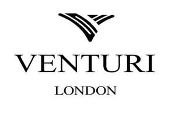

Trade Mark Journal No.2025/051 19 December 2025
UK00004306629 7 December 2025 (14)

- Class 14
- Watch winders; Watch dials; Watch straps; Watch bracelets; Watch glasses; Watch movements; Watch hands; Watch fobs; Watch faces; Watch boxes; Watch crystals; Watch clasps; Watch bands; Watch parts; Watch crowns; Watch pouches; Watch casings; Watch chains; Chains (Watch -); Watch cases; Clock and watch hands; Watch and clock hands; Watch springs; Springs (Watch -); Wrist watch bands; Watch cases [parts of watches]; Dials for clock and watch making; Dials [clock and watch making]; Watch boxes [presentation]; Watch and clock springs; Pendulums [clock and watch making]; Barrels [clock and watch making]; Watches; Leather watch straps; Stop watches; Watch straps of plastic; Non-leather watch straps; Watch straps of nylon; Hands (Clock -) [clock and watch making]; Clock hands [clock and watch making]; Pendants for watch chains; Metal watch bands; Wrist watches; Metal expanding watch bracelets; Mechanical watch oscillators; Sports watches; Wristlet watches; Watches for sporting use; Quartz watches; Chronographs for use as watches; Chronographs as watches; Chronographs [watches]; Dials for watches; Straps for watches; Dress watches; Watch straps of synthetic material; Watch straps of polyvinyl chloride; Table watches; Wrist straps for watches; Straps for wrist watches; Jewellery boxes and watch boxes; Diving watches; Watches for outdoor use; Pocket watches; Bracelets for watches; Bands for watches; Faces for watches; Alarm watches; Clocks and watches; Watches and clocks; Pendant watches; Presentation boxes for watches; Automatic watches; Parts for watches; Silver watches; Cases for watches [presentation]; Watches for nurses; Movements for watches and clocks; Movements for clocks and watches; Chains for watches; Electric watches; Watches containing a game function; Solar watches; Women's watches; Cases for watches; Divers' watches; Watch straps made of metal or leather or plastic; Electronic watches; Oscillators for watches; Mechanical watches; Watches made of gold; Clocks and watches for pigeon-fanciers; Cases for watches and clocks; Clocks and watches, electric; Platinum watches; Fittings for watches; Digital watches with automatic timers; LED finger ring watches; Housings for clocks and watches; Bracelets and watches combined; Cases adapted for holding watches; Wristwatches with pedometer feature; Jewellery; Necklaces [jewellery]; Brooches [jewellery]; Jewellery brooches; Jewellery, including imitation jewellery and plastic jewellery; Pendants [jewellery]; Bracelets [jewellery]; Brooches [jewellery, jewelry (Am.)]; Ornaments [jewellery]; Amulets being jewellery; Amulets [jewellery]; Pearls [jewellery]; Trinkets [jewellery]; Necklaces [jewellery, jewelry (Am.)]; Fashion jewellery; Jewelry; Lockets [jewellery]; Gold jewellery; Jade [jewellery]; Brooches [jewelry]; Jewelry brooches; Brooches being jewelry; Clasps for jewellery; Charms [jewellery]; Charms for jewellery; Jewellery charms; Enamelled jewellery; Pearls [jewellery, jewelry (Am.)]; Ornaments [jewellery, jewelry (Am.)]; Costume jewellery; Items of jewellery; Jewellery items; Decorative brooches [jewellery]; Trinkets [jewellery, jewelry (Am.)]; Rings being jewellery; Rings [jewellery]; Bracelets [jewellery, jewelry (Am.)]; Pewter jewellery; Jewellery stones; Cloisonné jewellery [jewelry (Am.)]; Cloisonné jewellery; Wristlets [jewellery]; Cloisonne jewellery; Charms [jewellery, jewelry (Am.)]; Lockets [jewellery, jewelry (Am.)]; Chains [jewellery, jewelry (Am.)]; Rings [jewellery, jewelry (Am.)]; Jewellery products; Ivory [jewellery, jewelry (Am.)]; Shoe jewellery; Precious jewellery; Crucifixes as jewellery; Necklaces [jewelry]; Pins [jewellery, jewelry (Am.)]; Jewellery chains; Chains [jewellery]; Ivory jewellery; Jewellery in semi-precious metals; Medallions [jewellery, jewelry (Am.)]; Jewellery chain; Jewellery caskets; Gold plated brooches [jewellery]; Paste jewellery [costume jewelry (Am.)]; Paste jewellery [costume jewelry [Am.]]; Jewellery boxes; Pins [jewellery]; Pins being jewellery; Amber pendants being jewellery; Jewellery for personal adornment; Pendants [jewelry]; Imitation jewellery; Cabochons for making jewellery; Jewellery chain of precious metal for necklaces; Amberoid pendants being jewellery; Body jewellery; Gold thread [jewellery, jewelry (Am.)]; Beads for making jewellery; Jewelry (Paste -) [costume jewelry]; Paste jewelry [costume jewelry]; Jewellery incorporating diamonds; Jewellery for pets; Jewellery in non-precious metals; Silver thread [jewellery, jewelry (Am.)]; Personal jewellery; Fake jewellery; Plastic costume jewellery; Imitation jewellery ornaments; Hat jewellery; Facial jewellery; Clips of silver [jewellery]; Jewellery findings; Crosses [jewellery]; Jewellery in the form of beads; Sterling silver jewellery; Bracelets [jewelry]; Paste jewellery; Jewellery (Paste -); Jewellery incorporating pearls; Pearls [jewelry]; Jewellery articles; Articles of jewellery; Jewellery made from gold; Jewellery made from silver; Diamond jewelry; Jewellery chain of precious metal for anklets; Wire of precious metal [jewellery, jewelry (Am.)]; Jewellery containing gold; Lockets [jewelry]; Dress ornaments in the nature of jewellery; Clasps for jewelry; Jewellery in precious metals; Jewellery of precious metals; Jewellery chain of precious metal for bracelets; Jewelry stickpins; Threads of precious metal [jewellery, jewelry (Am.)]; Jewellery for personal wear; Decorative pins [jewellery]; Jewellery fashioned from non-precious metals; Jewellery cases; Charms [jewelry]; Jewelry charms; Charms for jewelry; Jewellery rope chain for necklaces; Body costume jewellery; Jewellery fashioned of semi-precious stones; Earrings; Silver-plated earrings; Pierced earrings; Hoop earrings; Gold-plated earrings; Silver earrings; Gold earrings; Clip earrings; Drop earrings; Necklaces; Rings [jewelry]; Silver necklaces; Gold necklaces; Hat jewelry; Gold bracelets.
Parth Malde